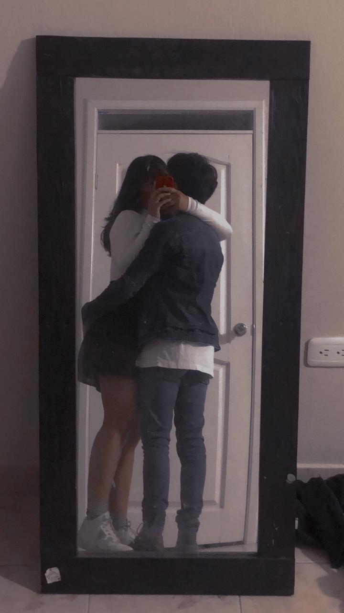

Mi aieseca favorita, hagamos las cosas bien por favor. Sé que el camino no es fácil
y tendremos caídas, abrán momentos felices y tristes, pero siempre busquemos la solución como un equipo por
favor, los dos juntitos sin permitir a terceros. Quiero que seas tú, te quiero a ti, solo a ti... Y siéndote
sincero, no me iré, nunca. ¿Sabes por qué? Porque estamos para sanar y aprender juntos, en ti encontré un
corazón precioso en una generación que se rinde por lo más mínimo y no lucha por lo que quiere y ama, así
que no pienso dejarte ir tan fácil...